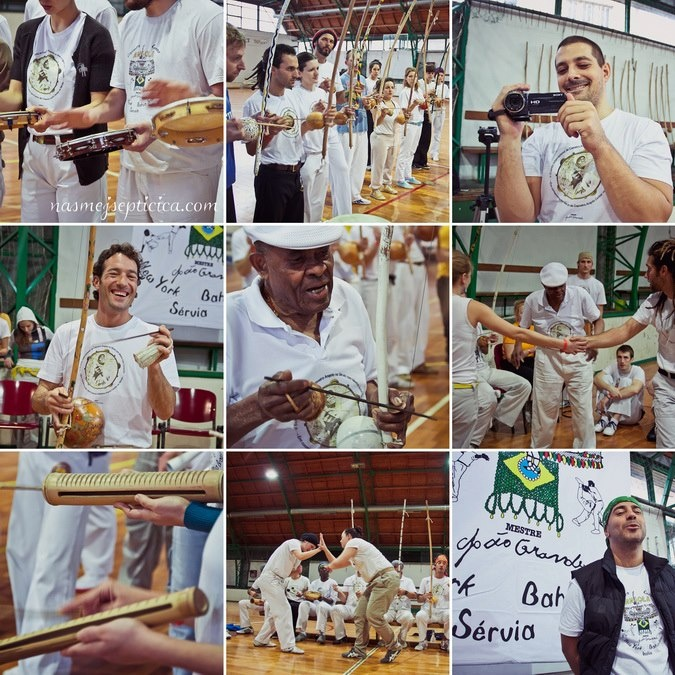

{Encontro na Servia com Mestre João Grande}
Что-то я ничего еще не писала с тех пор, как сайт переделали. Давно пора. Ровно 2 года назад меня втянуло в этот странный и многогранный мир капоэйры. За последнее время произошло много-много всего, о чем хотелось бы чиркнуть пару заметок, всего уже и не упомнить. Но несомненно то, о чем стоит все-таки написать, это сербский семинар с местре Жоао Гранде. Запланировано это было еще летом, когда я побывала в Сербии на теннисных сборах и познакомилась с дружелюбными и очень веселыми капоэйристами из сербского городка Нови Сад. Уже тогда я пообещала им, что совершенно точно приеду зимой на семинар и захвачу с собой парочку своих товарищей.
Нас из черно-желтеньких поехало в итоге всего двое, а жаль. Семинар был потрясающим. И не только потому, что это Жоао Гранде. Участие в этом семинаре оказалось выходом за «комфортную зону». Оказалось, я так привыкла к нашему мастеру, что семинар с другим оказался непростым испытанием для тела и ума.
Занятия проходили в основном физические, у нас было мало музыкальных классов. Поначалу, по традиции, было сложно разобраться, что есть что, так как движения назывались по-разному. Негачива, эшкива, армада, резистенсия — все слова были перепутаны, было непривычно и приходилось исключительно смотреть на толпу. А людей надо сказать было ооочень много. Это буквально была толпа народу. Насколько я знаю первый такой семинар в Сербии прошел с небольшим количеством народу. В этот раз людей было достаточно на большой амбар. Когда мы делали движения в рядах, мы буквально занимали всю площадь амбара.

Движения, надо сказать, запомнились едва ли. Не было ничего такого, что бы я с радостью в Москве показала бы своим товарищам под эгидой „семинар с Местре Жоао Гранде“. Связки были знакомые, движения все те же. Было много тезоры в связках, много ау (преимущественно ау леки они делали), но ничего сверхъестественного не было. Самым сложным, как для меня, так и для остальных участников семинара, были передвижения в связках. Иногда ты смотрел на связку, которую тебе показывали, и в буквальном смысле не понимал, как ты оказываешься в определенном положении. Но мастер внимательно следил за всем, что делали ученики. Ускользнуть от его взгляда,схалтурить не получалось.
Надо сказать, я была поражена тем, насколько невнимательными были ученики. После нескольких семинаров с местре Кобринья, я привыкла к тому, что после трех предупреждений «будьте внимательны к деталям», просто прилетало вергой по спине; привыкла к тому, что наш тренер тоже всегда делает упор именно на внимание к каким-то мельчайшим деталям, что делает нас предельно внимательными. Здесь же достаточно опытные ученики смотрели связку движений, кивали, мол, все поняли, а когда начинали делать, делали вообще что-то свое и уверяли всех вокруг, что надо делать точно так — поправляли тех, кто делал правильно, что было потом отдельно отмечено и мастером. Я снова почувствовала себя как в школе и в какой-то момент перестала смотреть по сторонам, чтобы не «списывать» неверную информацию.
Хотя тут конечно немаловажным стал тот факт, что иногда Местре очень спутанно объяснял саму связку — он подзывал своих старших учеников, в том числе Контра Местре Маркинью и иной раз они по 20 раз демонстрировали мастеру то, что он им пытался объяснить — и безуспешно. Пару раз в итоге связку Местре менял, так как никто не мог повторить того, что он объяснял.
Музыкальное занятие стало разрывом сознания. Местре Жоао Гранде останавливал всех, кто начинал петь песни из самбы. Под эту гребенку попала и моя песня про кучию. Стало немного не по себе, ведь эту песню написал мастер по нашей ветке — местре Мораес, чьим учеником является наш мастер, местре Кобринья. Так как я ношу апелиду Кучия, я расспросила в свое время почти все про эту песню у нашего тренера и у нашего мастера. Я знаю, какое значение она несет в роде, знаю, в какой момент ее поют, почти, что называется „из первых рук“, а тут мне вдруг говорят — нет, это самба. Кстати говоря, многие достаточно традиционные песни, которые поются в нашей академии на роде, попали под «самбу». В очередной раз поняла, как же чертовски дифференцирован этот мир капоэйры.
Надо сказать, грустно, но эта мысль стала главенствующей в моей голове в течение всего семинара. Одно время я наоборот радовалась, что капоэйра и капоэйра ангола есть почти везде — в какую страну не приеду, везде могу сходить на тренировку, на роду, это приятно. Но черт, каждый раз, когда я натыкаюсь на то, что это всемирное помешательство под названием «капоэйра» у всех настолько обособленное и „свое“, я немного теряюсь. И вопрос тут не в том, что все мы разные — это и так понятно. Местре Жоао Гранде только подливал масло в огонь — он никогда не уточнял, что конкретно то, что он в данный момент показывает, является традицией его школы. Наоборот. Если он тебя поправлял, он говорил «надо не так. так нельзя». Вообще нельзя.
То же самое он делал в роде. Это отдельная тема. Рода оба раза проходила в 2 круга — друг напротив друга сидели две батерии. Песни передавались из батерии к батерии. Было непросто, очень часто одна батерия отставала от другой — потому что слышно разницу было только когда ты сидел в кругу посередине. Но опыт забавный, да. Первая рода была учебная, Местре Жоао Гранде буквально стоял в кругу и направлял игроков. Это было необычно: «Ногу ставь сюда, развернись вот сюда, теперь волта ду мунду, теперь сапинья, шамада». Каждые 60 секунд делать волта ду мунду было утомительно, если честно — сложно было завязать игру. Удивительным было обнаружить еще одно из традиций группы — вызвать игрока на шамаду можно только стоя у беримбау виола, чтобы ближняя к беримбау нога была непременно впереди (вот так вот сложно) и никак иначе. Взрыв мозга.
Понравилось очень играть с Контра Местре Маркинью. Он очень веселый, игра шла задорно, очень гармонично и дружелюбно. Мой любимый ганшу, perfect timing, попал в цель, за что в конце игры я была опрокинута на пол хаштейрой. Но поиграли душевно, да) КМ меня запомнил:))
Еще очень забавным оказался следующий факт — когда мы уже уезжали, одна из девочек белградских подошла ко мне и сказала, что около 10 лет назад на семинаре она встретила девочку из Москвы, которая очень хотела заниматься Анголой, но не было такой возможности. Она собиралась тогда собрать свою группу. Вот только имени девочки не помнила, обещала уточнить. Уже тогда по рассказу, я подумала, что это — одна из основательниц группы, которая в последствии стала нашей группой FICA Moscou. Так и было. Мир тесен :)
Помимо семинара, за эти полгода произошло еще много всего. Теперь я веду в нашей группе музыкальные занятия. Так вот и я стала причастна к учебному процессу, что очень приятно. что уж говорить. Все, что нам давал Местре Кобра Манса, все то богатство, что было передано мне нашим тренером по музыкальной части я теперь передаю нашим новым (да и старым тоже) ученикам. Иногда конечно импровизирую, недавно вот проснулась и ударило в голову: «Надо дать класс на вариации с кащищи». Всем понравилось, трейнелу особенно:)) А то народ забывает, что делать вариации на беримбау можно самыми разными способами — не только тон и тинь, но и кабаса и кащищи и звуки чи-чи — это все можно варьировать и получить такую богатейшую гамму звуков. Вот так вот, растем потихоньку.
Админам кстати зачет. Сайт выглядит просто отлично! Спасибо за проделанную работу, вы молодцы!